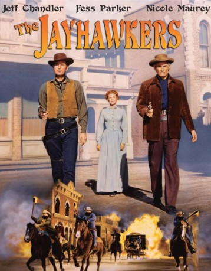
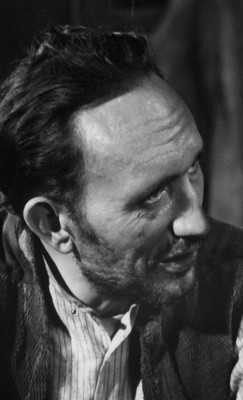
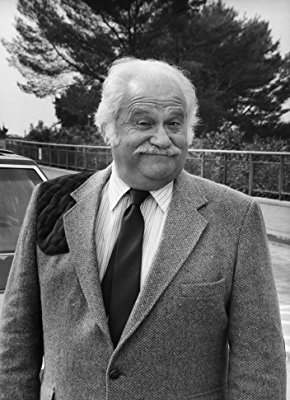
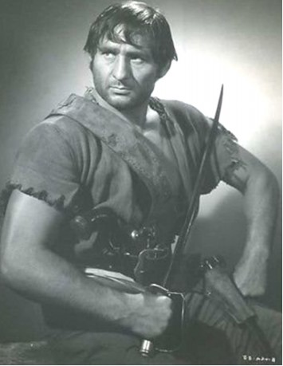
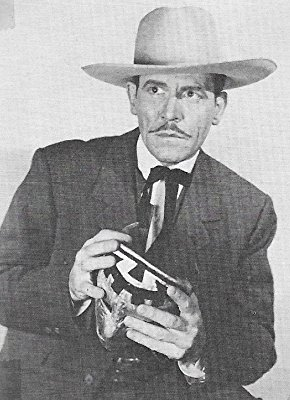

#3532 Der Herrscher von Kansas
Alternativ: The Jayhawkers!
 
 IMDB-Wertung: 6.5 / 10
IMDB-Wertung: 6.5 / 10  Metascore: 0
Metascore: 0 
In der Zeit von 1854 bis 1861 versuchte der Bandit Darcey im US-Territorium Kansas die Herrschaft zu übernehmen und einen unabhänigen Staat zu gründen. Der Gouverneur und der Revolvermann Bleeker, von Darcy für seine Ziele angeworben, verhinderten dieses erfolgreich und am 29.1.1861 wurde Kansas ein Staat der USA.
Jahr: 1959
Dauer: 100 Minuten
FSK: 12
Land: USA Studio: Paramount PicturesTonspuren:
Untertitel:
Auflösung: 1080p (1920x1056) Größe: 7198 MB
Genre: Western, Liebe
Regisseur: Melvin Frank
Drehbuch: Franck Cuvelier
Soundtrack:
Darsteller:
- Jeff Chandler als Luke Darcy
 Fess Parker als Cam Bleeker
Fess Parker als Cam Bleeker Henry Silva als Lordan
Henry Silva als Lordan-  Frank DeKova als Evans
 Ned Glass als Storekeeper
Ned Glass als Storekeeper Frank Hagney als Jayhawker , uncredited
Frank Hagney als Jayhawker , uncredited-  Jack Kruschen als Cattleman , uncredited
 Harry Dean Stanton als Deputy Smallwood , uncredited
Harry Dean Stanton als Deputy Smallwood , uncredited Glenn Strange als Sheriff , uncredited
Glenn Strange als Sheriff , uncredited Frank Wilcox als Lieutenant at Checkpoint , uncredited
Frank Wilcox als Lieutenant at Checkpoint , uncredited- Nicole Maurey als Jeanne Dubois
- Herbert Rudley als Gov. William Clayton
- Don Megowan als China
 Leo Gordon als Jake Barton
Leo Gordon als Jake Barton- Shari Lee Bernath als Marthe DuBois
 Jimmy Carter als Paul DuBois
Jimmy Carter als Paul DuBois- Renata Vanni als Indian Woman
- Berel Firestone als Jayhawker
 Al Wyatt Sr. als Jayhawker
Al Wyatt Sr. als Jayhawker- Charles Bail als Jayhawker
- Richard Shannon als Townsman Looking for a Match
- Barbara Knudson als Townswoman
- Max Power als Governor's Aide
- Joseph Forte als Minister
- Tony Regan als Bartender
- Howard Joslin als Officer
- John Wiles Rice als Jayhawker
- Richard Adams als Soldier , uncredited
- Eric Alden als Man with Whip , uncredited
- George Barrows als Captain , uncredited
- Charles Boaz als Gateman , uncredited
 Chet Brandenburg als Cheering Townsman , uncredited
Chet Brandenburg als Cheering Townsman , uncredited- John Breen als Townsman , uncredited
- Forest Burns als Soldier , uncredited
- Polly Burson als Schoolteacher , uncredited
- Harry Clexx als Sheriff , uncredited
- Carole Conn als Girl , uncredited
- Russell Custer als Jayhawker , uncredited
 Duke Fishman als Soldier , uncredited
Duke Fishman als Soldier , uncredited- William E. Green als Mayor , uncredited
 Herman Hack als Townsman , uncredited
Herman Hack als Townsman , uncredited Chuck Hamilton als Jayhawker , uncredited
Chuck Hamilton als Jayhawker , uncredited- Al Haskell als Townsman , uncredited
-  Chester Hayes als Townsman , uncredited
- James Hope als Sheriff , uncredited
 Michael Jeffers als Cheering Townsman , uncredited
Michael Jeffers als Cheering Townsman , uncredited- Mitchell Kowall als Governor's Aide , uncredited
-  Kenneth MacDonald als Army Lieutenant , uncredited
- Mike Mahoney als Telegrapher , uncredited
- Paul McGuire als Stationmaster , uncredited
Datei: X:\HD-Western-1900-1959\Herrscher von Kansas, Der (1959, FSK12, 1920x1056).mkv seit 25.04.2016
Festplatte: HD Eastern+Western
 Es gibt insgesamt 98 Filme in der Gruppe 'HD-Western-1900-1959'
Es gibt insgesamt 98 Filme in der Gruppe 'HD-Western-1900-1959'